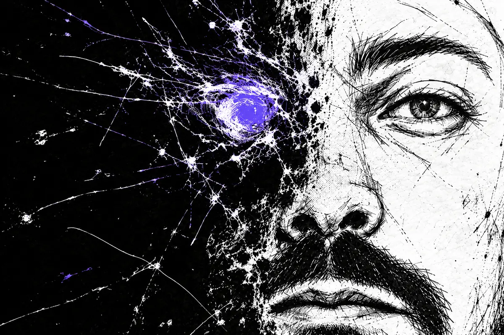

Prima dello zero

Info immagine
Bozzetto a china digitaleUn volto resta nel segno, l'altro si dissolve nel nero. L'occhio viola tiene insieme le due metà: un ritratto fra china e bit, creato con l'AI a partire da una fotografia e da successive scelte di composizione.
Prima del nome, un gesto.
Poi l’inchiostro,
poi lo zero e l’uno.
In quale passaggio
abbiamo imparato a mancare?